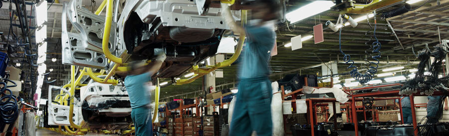

Cross-team working
As an extension of teamwork, some organisations also have cross-team working. This is based on collaboration between different teams and is a useful way of working when there is a shared project or objective. The number of people involved in cross-team working will depend on the scale of the collaboration.
Some teams with different functions work together all the time. For example, in a car manufacturing company, functional teams that work together all the time could include separate teams who:
- build the bodywork of the cars
- install the engines
- install the electronics and trim
- do the paint finishing.
Each team’s work is dependent on input from other teams, so they need to liaise on a regular basis about subjects that include, for example:
- the speed of production – so that the cars flow steadily from one team to the next without any delays, backlogs or excessive waiting times
- quality – so that all the teams work to a recognised standard
- problem solving – so that they have agreed procedures on what to do when things go wrong to minimise the knock-on effect on other teams.
Sometimes, different functional teams only come together for a specific project. For example, a wedding planning company works with over a hundred different suppliers and brings together different teams for each event. The requirements are unique for each couple and they can choose from several suppliers for each function, including, for example:
- venue
- catering
- waiting and bar service
- floristry
- music and entertainment
- table and room decoration.
The wedding planner then has to bring together the different functional teams to work together just for the one wedding. Some of the supplier teams may know each other, and work together from time to time, but each wedding will be different.
In cross-team working, it can help to smooth the process by having some individuals move from one team to the other. This can be on a temporary or permanent basis. It can help to ease problems by having an expert on hand to answer queries and help solve problems. For example, in the car manufacturing company, a paintwork specialist could work with the bodywork team to help them to prepare the metal to a suitable standard to accept the paint well. This would be particularly useful when:
- a new procedure or product is introduced – eg they need to work out new methods together when designing the quality standards for a new model
- there have been quality issues – eg to make sure that adjustments and improvements are effective.
Moving individuals from one team to another can also be of great benefit to their career development and working relationships. For example, in a large hotel or restaurant, kitchen team members and front of house team members rely on each other to deliver excellent products and service to the guests. To really appreciate what the other team does and needs, it can be useful and enlightening to work with them for a short while.